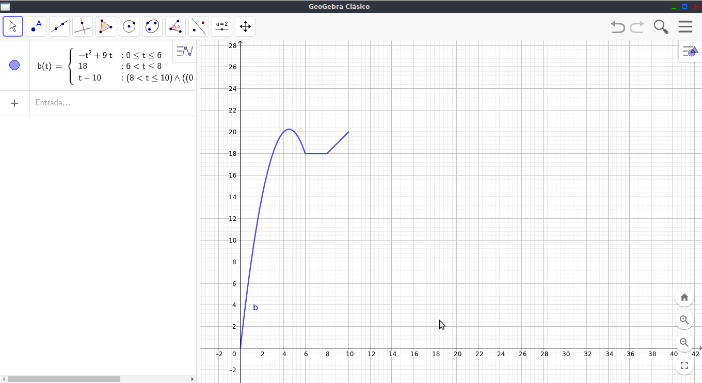

Trabajo práctico número 1
Versión digital
Integrantes del grupo
- Caldara Nazarena
- Zeballos Alexis
- Vera Nahuel
- Rojas Ivan
- Cardella Octavio
Punto 1
El beneficio B esperado por una empresa en los próximos 10 años viene indicado por la siguiente función:
El tiempo t esta expresado en años y el beneficio B en millones de euros.
a) ¿Cuál es la variable dependiente y cuál la variable independiente en el problema?
En general la variable dependiente es la variable de una funcion cuyo valor se modifica en dependencia del valor de la variable independiente. La variable independiente es aquella que se manipula para determinar su efecto (si lo hay) sobre la variable dependiente. En otras palabras, podemos definir que el beneficio 'B' es la variable dependiente y el tiempo transcurrido 't' es la variable independiente.
b) Graficar la funcion B e indicar dominio e imagen bajo el contexto del problema.

En 0 ≤ t ≤ 6
Bv = -tv2+9tv
Bv = -(9/2)2+9(9/2)v